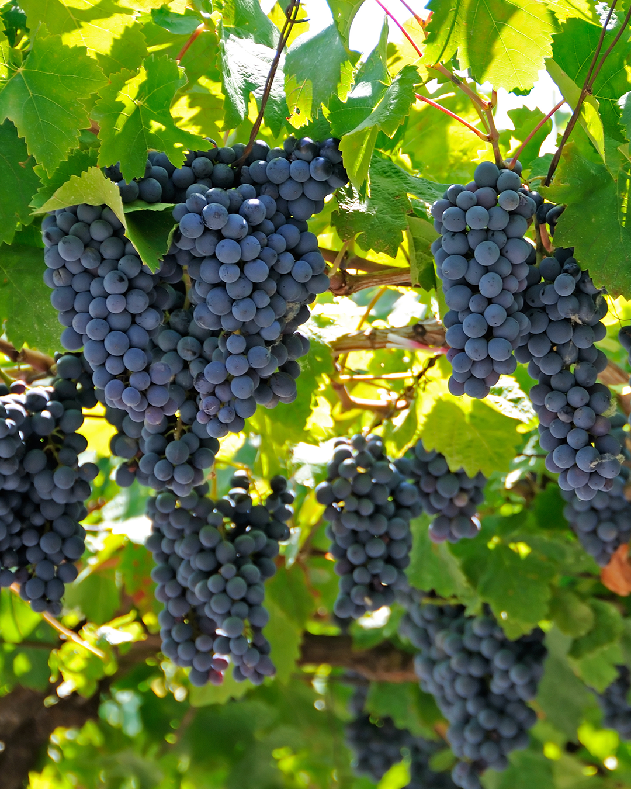

Vranec
“The fruit is dark, but the wine still has lift.”
Why: Vranec is Vardar’s flagship red grape, and it rarely enters quietly. It is usually deep in color, full in body and built around black fruit: plum, blackberry, black cherry, sour cherry, sometimes violet, pepper or herbs. But the important thing is not size. Many wines are big. Fewer have shape. A good Vranec should begin with fruit, tighten with tannin, rise with acidity and finish somewhere more savory than sweet.
Color
“Don’t give it points just for being dark.”
Why: Vranec can look impressive before you even smell it. The grape is thick-skinned, deeply pigmented and rich in anthocyanins, which helps explain the dark ruby or purple-edged color of many young bottles. But color is only evidence of extraction and grape character. It does not prove balance. A dark wine can still be dull, hot or clumsy. The better question is: does the wine move?
Tannin
“The tannins are firm, but they’re ripe.”
Why: Tannin is where Vranec proves itself. The grape naturally gives structure, dry extract and grip, so the issue is not whether tannin is present. It will be. The issue is whether it feels integrated. Good tannin frames the wine. Bad tannin dries out the finish after the fruit has disappeared. One of the most useful sentences in tasting Vranec is: “The tannin outlasts the fruit.” That is a polite way of saying the wine is not balanced.
Alcohol
“There’s warmth, but it isn’t leading.”
Why: Vranec ripens generously, especially in warmer districts. That can give the wines breadth, body and a certain southern confidence. But alcohol should support the wine, not announce itself. Balanced warmth feels expansive. Unbalanced heat catches at the back of the throat. If the wine feels sweet, heavy or short, the problem may not be ripeness itself, but ripeness without enough freshness to carry it.
Origin
“Adopted flagship, not native-born mascot.”
Why: Vranec is central to modern Macedonian red wine, but its official origin points to Montenegro, where it is known as Vranac. Genetic records identify it as the offspring of Duljenga and Kratošija.
Tikveš
“This is the reference point.”
Why: Tikveš is the classic center of Macedonian wine and the easiest place to understand Vranec in its most recognizable form. Mediterranean warmth meets continental influence, and the better sites can give concentration without losing freshness. Expect dark fruit, body, tannin and, in the best examples, enough acidity to keep the wine from becoming merely heavy. Tikveš Vranec is the baseline: generous, structured and serious.